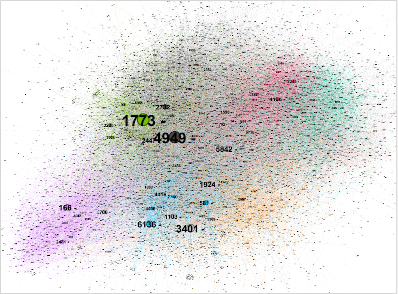
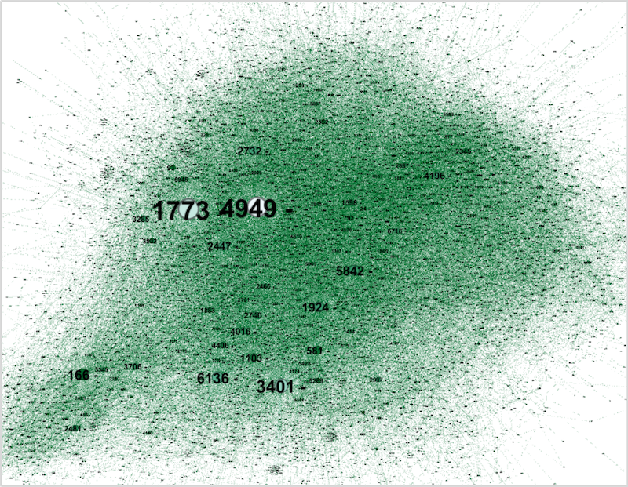
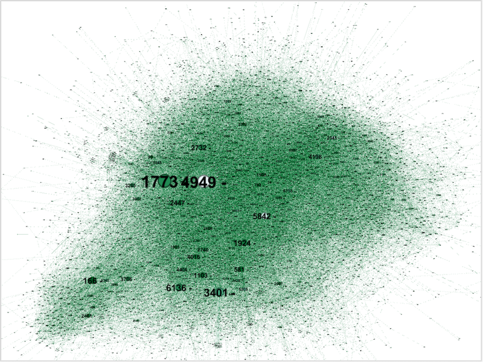

Twitch Influencer
Network Analysis
Objectives
Identify the most impactful Twitch influencers to promote the launch of the video game Thrive in Space 5 using Social Network Analysis (SNA).
Methodology
Collected and analyzed Twitch user data, including streamer activity, views, affiliate status, and content type Imported node and edge data into Gephi to visualize the Twitch user network Applied key SNA metrics: Degree Centrality, Betweenness Centrality, and Eigenvector Centrality Selected top 3 influencers based on combined centrality scores and qualitative profile review
Data Overview
-
The dataset contains information on 7,126 Twitch streamers and 3,524 connections (follows) between them.
- Data Dictionary
-
Column Name Data Type Count Means Median Min Max ID Integer 7126 Days_Active Integer 7126 1,525 1,536 84 4,161 Mature_content Boolean 7126 Views Integer 7126 193,470 4,840 5 178,500,544 Affiliate Boolean 7126 Channel_ID Integer 7126 - Exploratory Data Analysis (EDA)
Network Structure Analysis
Steps
| 1 | Calculate in-degree and out-degreeby clicking "Average Degree" and closeness and betweenness centrality by running "NetworkDiameter". Run the more intuitively titled "EigenvectorCentrality" to obtain eigenvector centrality scores. |
| 2 | Change the appearance of the nodes.
|
| 3 |
|
| 4 | Select the node with the largest node size as a candidate for influencer. |
Degree Centrality
Degree centrality measures the number of direct connections a node has in the network. It is a simple count of edges connected to the node.
Betweenness Centrality
If a node has a high Betweenness Centrality value, it means that the node often appears in the communication or information flow paths of other nodes in the network, acting as an “intermediary” or “bridge”.
Eigenvector Centrality
Eigenvector centrality measures the influence of a node in the network, taking into account not just the number of connections (degree), but also the quality or importance of those connections. A node connected to other high-centrality nodes will have a higher eigenvector centrality score. It meets the requirements of the influencer we are looking for.
All three metrics lead to the same conclusion, i.e., 4949, 1773, 3401. So we think there are strong reasons to prove that these three streamers can fulfill the role of influencer.
Top 3 Influencer
| ID | Days Active | Mature Content | Views | Affiliate | Channel ID | Num of Sources | Profile | Live Channel |
|---|---|---|---|---|---|---|---|---|
| 4949 | 2632 | False | 46,682,923 | True | 23735582 | 465 | Profile | Live Channel |
| 1773 | 2784 | False | 89,506,813 | True | 20786541 | 180 | Profile | Live Channel |
| 3401 | 2959 | True | 20,253,246 | True | 15310631 | 208 | Profile | Live Channel |